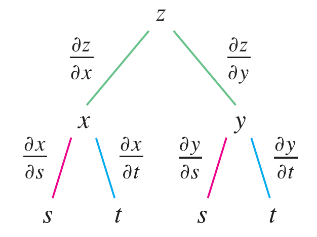

To remember the Chain Rule, it’s helpful to draw the tree diagram.

We draw branches from the dependent variable \(z\) to the intermediate variables \(x\) and \(y\) to indicate that \(z\) is a function of \(x\) and \(y\). Then we draw branches from \(x\) and \(y\) to the independent variables \(s\) and \(t\). On each branch we write the corresponding partial derivative. To find \(\partial z / \partial s\), we find the product of the partial derivatives along each path from \(z\) to \(s\) and then add these products: \[ \frac{\partial z}{\partial s} = \frac{\partial z}{\partial x} \frac{\partial x}{\partial s} + \frac{\partial z}{\partial y} \frac{\partial y}{\partial s} \] Similarly, we find \(\partial z / \partial t\) by using the paths from \(z\) to \(t\).
Now we consider the general situation in which a dependent variable \(u\) is a function of \(n\) intermediate variables \(x_1, ..., x_n\), each of which is, in turn, a function of \(m\) independent variables \(t_1, ..., t_m\). Notice that there are \(n\) terms, one for each intermediate variable. The proof is similar to that of Case 1.